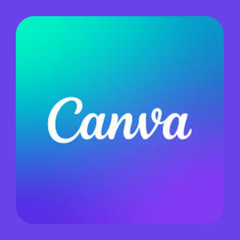

Students can use digital creation tools to collaborate, design projects, and share their learning with others.

These tools help students communicate ideas, collaborate with classmates, and create meaningful projects.